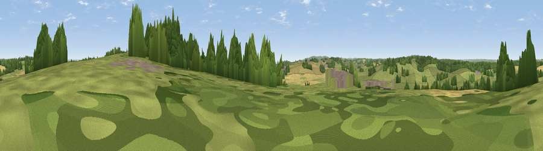

Viewpoint near Playden
#36322 in England · top 54% of its area beats it · near PlaydenWhere it is
The exact computed spot (TQ 91125 21575). Click the marker for map links.
The view, rendered

A 360° render of this exact spot computed from the terrain model, tree cover and land cover — summer colours, afternoon light, calibrated against photographs of famous viewpoints. Real trees, hedges and buildings will differ in detail.
The panorama
Grey silhouette: terrain skyline in each direction (720 bearings, Earth curvature and refraction included). Dashed green: skyline with trees (+15 m) and buildings (+8 m) as obstacles. Blue strip: how far the ground is visible on each bearing.
Where the view opens
Wedge length = distance to the farthest visible ground on that bearing (vegetation-aware). Rings at 10, 25 and 50 km.
What fills the view
57% grassland · 19% woodland · 18% cropland · 4% built-up · 2% water
Angular shares of the visible panorama (visual magnitude), not map area. Landscape diversity 0.51 (0–1 Shannon).
Key numbers
More beautiful places nearby
The staircase of upgrades: each row has a higher view potential than everything closer. Driving times are estimates from straight-line distance, calibrated against real road routing — check an actual route before setting out.
| Place | Direction | Drive | Score |
|---|---|---|---|
| Leasam Hill | E · 0 km | ~2 min | 53.1 |
| Viewpoint near Playden | ESE · 1 km | ~4 min | 58.3 |
| Viewpoint near Udimore | SW · 3 km | ~7 min | 59.7 |
| Viewpoint near Stone in Oxney | NE · 6 km | ~12 min | 60.1 |
| Viewpoint near Fairlight | SSW · 11 km | ~20 min | 75.1 |
| Viewpoint near Fairlight | SSW · 11 km | ~21 min | 78.2 |
| Viewpoint near Fairlight | SSW · 12 km | ~22 min | 79.0 |
| Viewpoint near Capel-le-Ferne | ENE · 36 km | ~55 min | 80.2 |
50.96189, 0.72029 · source: screening · position refined by local search. Computed location — check access rights before visiting.